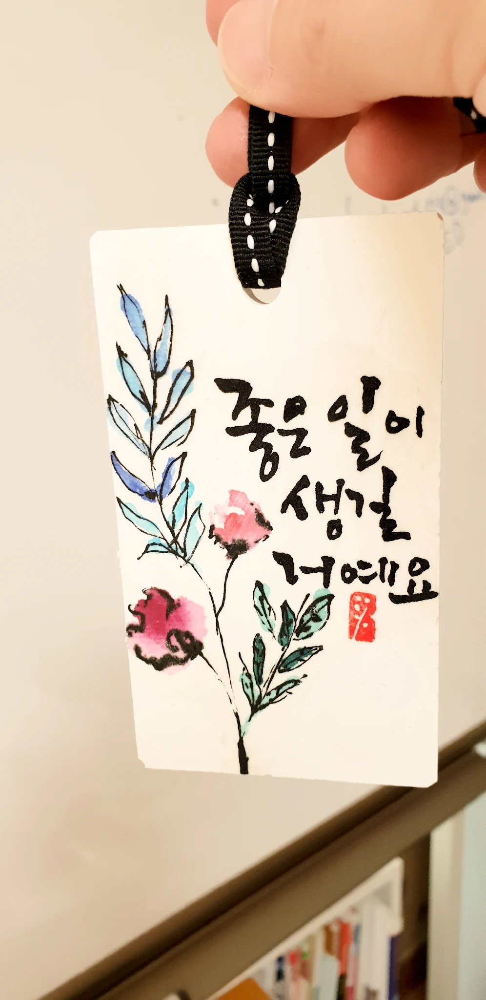
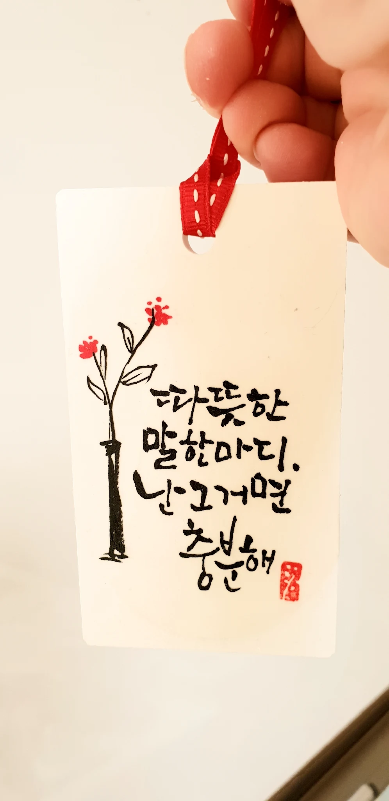
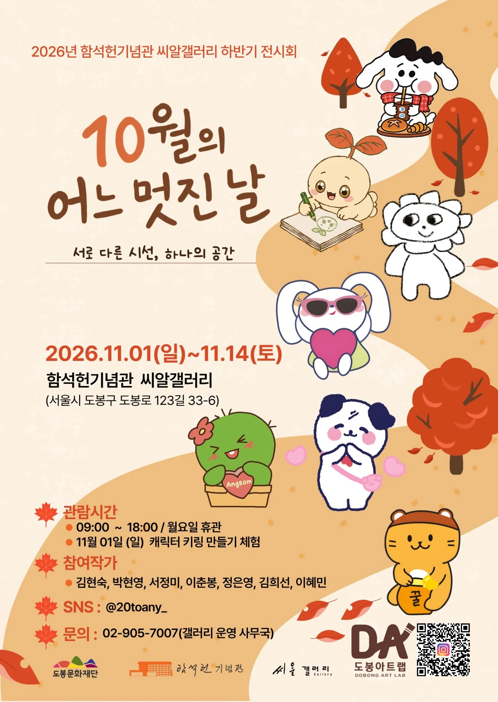
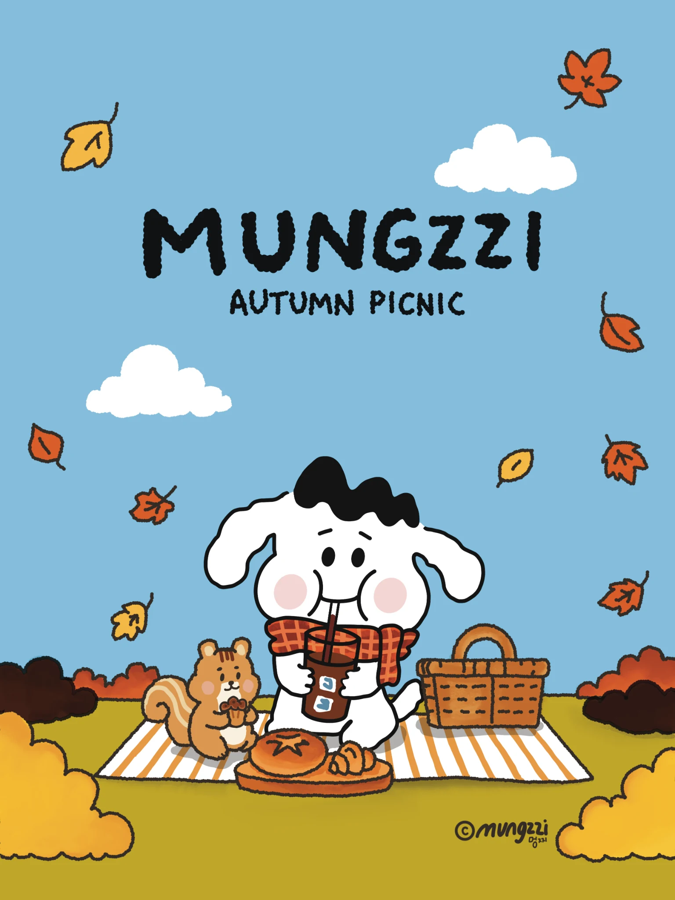
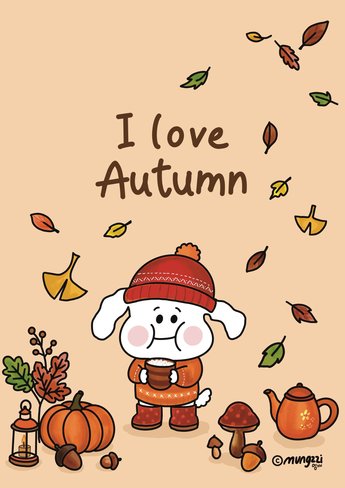

BYC · 7년
언더웨어 디자이너
언더웨어 디자인 실무를 통해 제품 디자인의 전문성과 경험을 축적했습니다.
PARK HYUN YOUNG
Character Creator · Designer · AI Digital Marketer
안녕하세요. 멍찌(MUNGZZI) 캐릭터를 만드는 작가이자, AI를 활용해 새로운 가능성을 만들어가는 디자이너 PARK HYUN YOUNG입니다.

MY STORY
캐릭터 IP 디자인 · 콘텐츠 기획 · AI 활용 디지털 마케팅 · 웹디자인
10년간 패션 언더웨어 디자이너로 일하며 디자인의 기본기와 실무 경험을 쌓았습니다. 이후 웹디자인과 캘리그라피, 지역사회 교육 활동을 통해 다양한 사람들과 소통하고 콘텐츠를 기획하는 경험을 이어 왔습니다.
2025년에는 직접 개발한 캐릭터 멍찌(MUNGZZI)를 통해 창작 활동을 본격화했고, AI 기술을 활용한 홈페이지 제작과 지역 프로젝트에 도전했습니다.
저는 디자인을 단순히 보기 좋은 결과물을 만드는 일이 아니라, 사람의 이야기를 발견하고 그 가치를 전달하는 과정이라고 생각합니다.
저는 새로운 정보를 찾고, 서로 다른 아이디어를 연결하며, 그것을 실제 결과물로 만드는 과정을 좋아합니다. 주변에서는 저를 '완똑박'이라는 별명으로 부르기도 했습니다. 궁금한 것은 끝까지 찾아보고, 배운 것을 다양한 활동과 연결하려는 저의 성향을 표현한 별명입니다.
2009년 출산 이후에는 육아에 전념하면서도 배움을 멈추지 않았습니다. 독서와 캘리그라피를 통해 지역사회와 소통했고, 마을학교와 학부모 활동을 통해 사람들을 모으고 프로그램을 운영하는 경험을 쌓았습니다.
경력의 공백을 성장의 시간으로
사람을 이해하고 소통하며 새로운 콘텐츠를 기획하는 능력을 키운 시간이었습니다.
2019년에는 주민설계 마을학교에서 '북하모니'와 함께 초등학교 4~6학년 학생들을 대상으로 책 읽기와 토론 프로그램을 진행했습니다.
또한 캘리그라피를 활용해 책갈피와 액자, 부채, 방향제 등을 만들고 학부모들에게 직접 제작 방법을 가르쳤습니다. 프로그램을 알리고 참여자를 모집하기 위해 인스타그램과 카카오톡 단체방을 활용하면서 자연스럽게 홍보와 커뮤니티 소통도 경험했습니다.


좋은 아이디어는 실행할 때 가치가 생기고, 작은 활동도 사람들이 함께하면 의미 있는 결과가 된다는 것입니다. 이러한 경험은 현재 제가 콘텐츠를 기획하고 사람들과 협업하는 방식에 큰 영향을 주고 있습니다.
브랜드의 특성을 이해하고 소비자의 취향을 고려해 디자인하는 과정에서 제품의 완성도뿐 아니라 고객의 관점에서 생각하는 태도를 배웠습니다.
언더웨어 디자이너
언더웨어 디자인 실무를 통해 제품 디자인의 전문성과 경험을 축적했습니다.
언더웨어 디자이너
브랜드 특성과 타깃에 맞는 디자인 업무를 수행하고 실무 역량을 확장했습니다.
캘리그라피 및 지역 교육 활동
디지털 환경에서 정보를 시각적으로 구성하고 전달하는 디자인 경험과 캘리그라피 굿즈·체험 교육 경험을 쌓았습니다.
디자인 분야에서 시작한 저의 경험은 현재 캐릭터 창작과 디지털 콘텐츠 제작, AI 기반 마케팅 프로젝트를 수행하는 토대가 되었습니다.
MY STRENGTHS
10년간의 언더웨어 디자인 경험을 바탕으로 오리지널 캐릭터 멍찌를 개발하고 저작권 등록까지 완료했습니다.
아이디어를 시각적으로 표현하는 능력을 넘어, 일관된 캐릭터 정체성을 유지하고 다양한 콘텐츠와 상품으로 확장하는 기획력을 키우고 있습니다.
마을학교와 학부모 활동, 캘리그라피 교육, 도봉아트랩 전시를 통해 다양한 사람들과 소통하며 프로그램을 운영했습니다.
대상에 맞는 콘텐츠를 만들고 사람들의 참여를 이끌어내는 경험은 디지털 마케팅에서도 활용할 수 있는 중요한 강점입니다.
ChatGPT와 Vercel을 활용해 홈페이지를 직접 제작하고 실제 제안 프로젝트에 적용했습니다.
새로운 기술을 배우는 것에 머무르지 않고, 필요한 결과물을 직접 만들고 검증하는 실행력을 갖추고자 노력하고 있습니다.
PROJECTS
일상의 작은 감정을 캐릭터로 표현하다
2025년 이모티콘 제작을 계기로 직접 개발한 오리지널 캐릭터 멍찌(MUNGZZI)는 저의 디자인 경험과 창작에 대한 열정이 담긴 프로젝트입니다.
멍찌는 친근한 외형과 사랑스러운 감정을 바탕으로 일상 속 공감과 이야기를 전하는 캐릭터입니다. 특히 연애와 로맨스, 커플의 소소한 일상을 소재로 다양한 콘텐츠를 기획하고 있습니다.


캐릭터의 외형과 비율, 표정과 스타일을 설계하고, 콘텐츠로 확장하는 작업을 진행해 왔습니다. 한국저작권위원회에 저작권 등록을 완료했으며, 자체 홈페이지를 제작해 캐릭터와 작품을 소개하고 있습니다.
“캐릭터는 사랑이야. 멍찌는 사랑이지.”
멍찌를 단순한 캐릭터에서 나아가 사람들의 일상에 공감과 즐거움을 전하는 콘텐츠 IP로 성장시키는 것이 저의 목표입니다.
작은 열정이 모여 하나의 전시가 되다
개인 창작 활동을 넘어 지역의 다양한 창작자들과 함께 새로운 가능성을 만들어 보고 싶었습니다.
멍찌 캐릭터 작업을 이어가던 중 동아리 활동을 통해 도봉아트랩을 결성했고, 구성원들과 함께 작품을 준비하며 지역 전시 프로젝트에 참여했습니다.
2026년 11월 1일부터 14일까지 도봉구 함석헌기념관에서 전시회를 진행하고 있습니다.



이 프로젝트는 저에게 단순한 전시 이상의 의미를 가지고 있습니다. 서로 다른 관심과 재능을 가진 사람들이 하나의 목표를 위해 협력하고, 작은 아이디어를 실제 전시라는 결과로 연결했기 때문입니다.
프로젝트 협업과 소통, 지역 기반 콘텐츠 기획, 창작 활동의 실행력, 공동 목표를 향한 문제 해결 능력입니다.
지역의 작은 이야기에도 충분한 콘텐츠 가치와 성장 가능성이 있다.
AI를 활용해 지역 산업의 이야기를 디지털로 연결하다
도봉양말제조연합회 홈페이지 제작 및 마케팅 제안
도봉구의 양말 제조 산업을 알리고, 도봉양말제조연합회의 인지도를 높이기 위한 디지털 홍보 방안을 고민했습니다. 연합회 회원사 확대와 일반 소비자의 관심을 높이는 것을 목표로 홈페이지 제작 및 마케팅 방안을 제안했습니다.
프로젝트 홈페이지 ↗저는 4명의 팀원 중 홈페이지 구축을 담당했습니다. ChatGPT를 활용해 홈페이지를 기획하고 제작했으며, Vercel을 통해 실제 접속할 수 있는 웹사이트로 배포했습니다.
이후 홈페이지를 조별 발표 자료로 활용하고 연합회 이사장님께 직접 제안했습니다. 다른 팀원들은 발표 자료와 인스타그램, 블로그 콘텐츠 목업 등을 제작하여 프로젝트를 함께 완성했습니다.
처음부터 충분한 자료와 명확한 답이 준비되어 있지는 않았습니다. 하지만 필요한 정보를 찾아 정리하고, 문제를 구체화하고, AI를 활용해 결과물을 만들어가는 과정을 경험했습니다.
또한 홈페이지를 만드는 것에서 끝나는 것이 아니라 실제 운영 주체의 요구와 실행 가능성을 고려해야 한다는 점도 배웠습니다.
AI가 단순한 정보 검색 도구를 넘어, 아이디어를 실제 결과물로 구현하는 실무 도구가 될 수 있다는 확신을 주었습니다.
TOOLS
홈페이지 기획·제작과 AI 기반 콘텐츠 작업
제작한 웹사이트 배포
콘텐츠 홍보와 참여자 소통
지역 활동과 프로그램 참여자 커뮤니케이션
이미지 보정과 그래픽 편집
벡터 그래픽과 캐릭터 디자인
디지털 드로잉과 일러스트 제작
숏폼 영상 편집
MY VISION
저는 앞으로 프리랜서 디자이너이자 AI 디지털 마케터로서 다양한 프로젝트에 참여하고 싶습니다.
특히 직접 개발한 멍찌 캐릭터를 기반으로 콘텐츠와 굿즈, 브랜드 협업 분야를 확장하고자 합니다.
또한 지역의 소상공인과 단체들이 자신들의 이야기를 더 효과적으로 전달할 수 있도록 디자인과 AI를 활용한 디지털 마케팅에도 도전하고 싶습니다.
앞으로도 창의적인 디자인 감각과 AI 활용 능력을 결합하여 사람과 브랜드, 지역을 연결하는 디지털 마케터로 성장하고자 합니다.
의뢰인의 이야기를 충분히 듣고 중요한 가치를 찾습니다.
그 안에서 중요한 가치를 찾아내며 새로운 기술을 적극적으로 활용합니다.
아이디어를 실질적인 결과물로 연결합니다.
CONTACT
캐릭터 디자인, 콘텐츠 기획, 웹디자인, AI를 활용한 디지털 마케팅 등 새로운 프로젝트와 협업을 환영합니다.
PARK HYUN YOUNG
멍찌25의 작가 · 서울